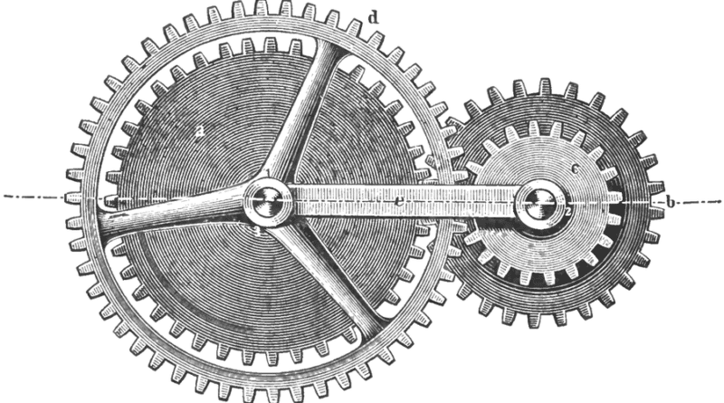

Leveraging the Liberal Radical Mechanism
Publicly available scientific research, like many other public goods, is generally underfunded because it generates significant positive externalities. We propose to use the LR mechanism to fund scientific research.